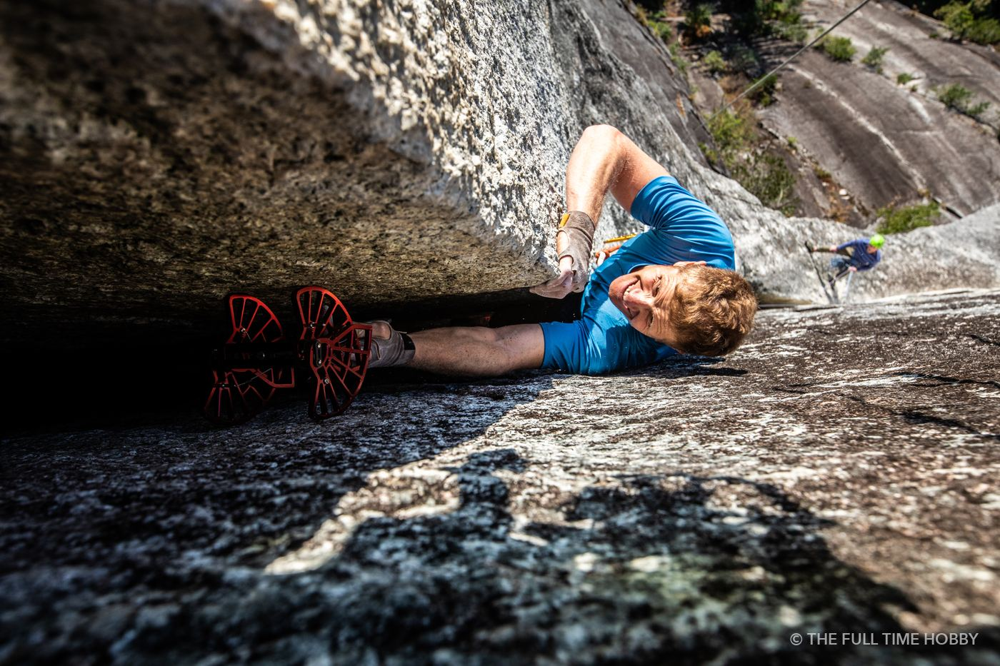
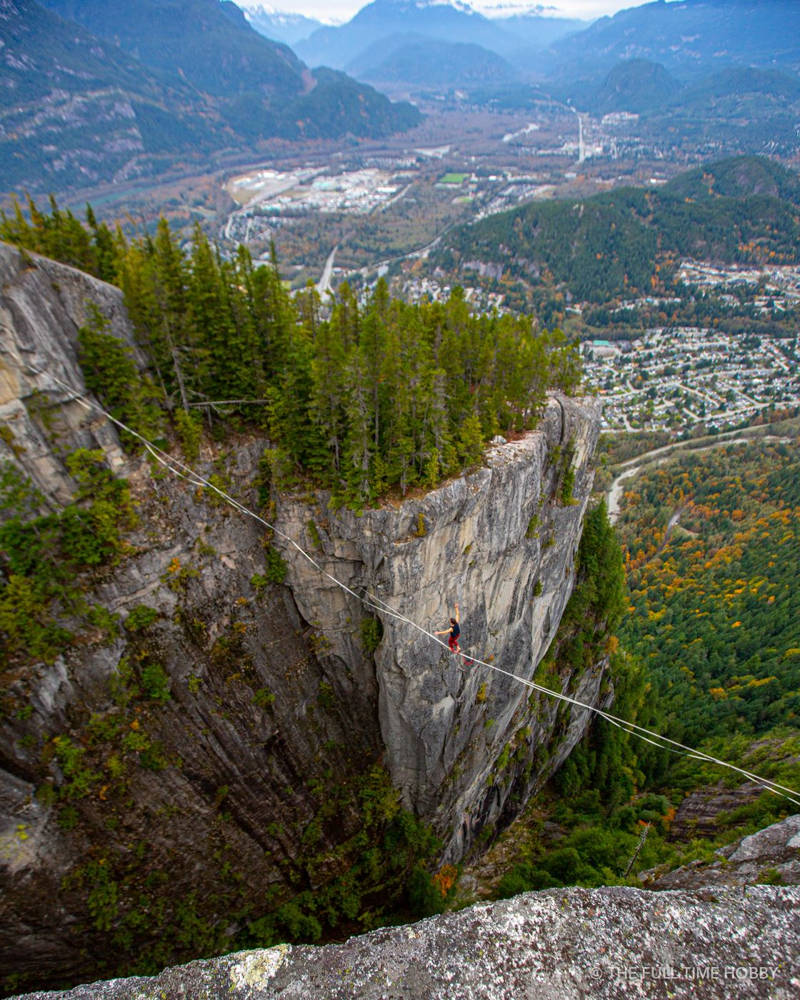
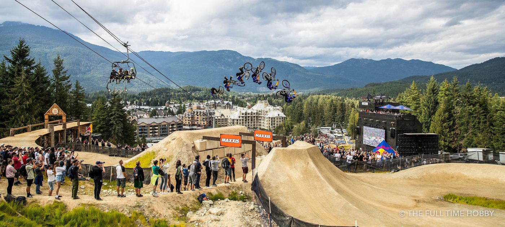

1. Start with where the content will live
Before talking locations or models, list where you’ll actually use the content: website hero, product pages, Instagram, Reels and TikTok, print, paid ads. Each one has different needs. A website banner wants wide, horizontal frames with space for text. Reels want vertical video. Ads want a clear product and a face. Writing this down first is the single best way to avoid wasted shoot days.
2. Write a shot list (and keep it short)
Aim for 10–20 must-have shots, then a list of nice-to-haves. Be specific: “guest laughing in the sauna, vertical, steam visible” is a shot; “lifestyle” is not. Your photographer will find extra moments on the day. The list makes sure the essentials happen first.
3. Pick locations that tell your story
The Sea to Sky is a huge advantage: ocean, granite, rainforest and alpine within an hour. Pick one or two places that actually connect to your business, and plan around travel time. Every hour in the car is an hour not shooting.

4. Check permits early
Commercial filming and photography in provincial parks generally needs a permit from BC Parks, and some municipalities, trail networks and resorts have their own rules. Drones have separate restrictions, and are off-limits in many parks. Sort this out weeks ahead, not the night before.
5. Plan for the weather (because it will change)
Coastal BC weather is unpredictable. Build in a backup date, or a backup indoor location, and decide ahead of time who makes the call. Overcast days are often great for portraits and forest scenes, so a grey forecast isn’t automatically a cancellation.
6. Photo, video, or both?
Video is great for ads and social; photos still do the heavy lifting on websites and print. Shooting both on the same day saves on location, talent and travel. Just make sure the shot list says which moments need which, because good video takes more time per scene than a still.

7. Talk about usage rights up front
When you hire a photographer, you’re usually buying a licence to use the images, not the copyright. Make sure the agreement covers where you’ll use them (web, social, print, paid ads), for how long, and whether partners or retailers can use them too. Paid advertising and billboards usually cost more than organic social use. Get it in writing so nobody is surprised later.
8. Model releases
If recognisable people appear in images you’ll use for marketing, get a signed model release from each of them, including staff and friends. Your photographer should bring one.
Need a photographer in Squamish or Whistler?
I shoot photo and video for outdoor brands, tourism businesses and events across the Sea to Sky, and I’m happy to help plan the shoot from the shot list up. If you just need a few images, everything in my stock library can be licensed today.